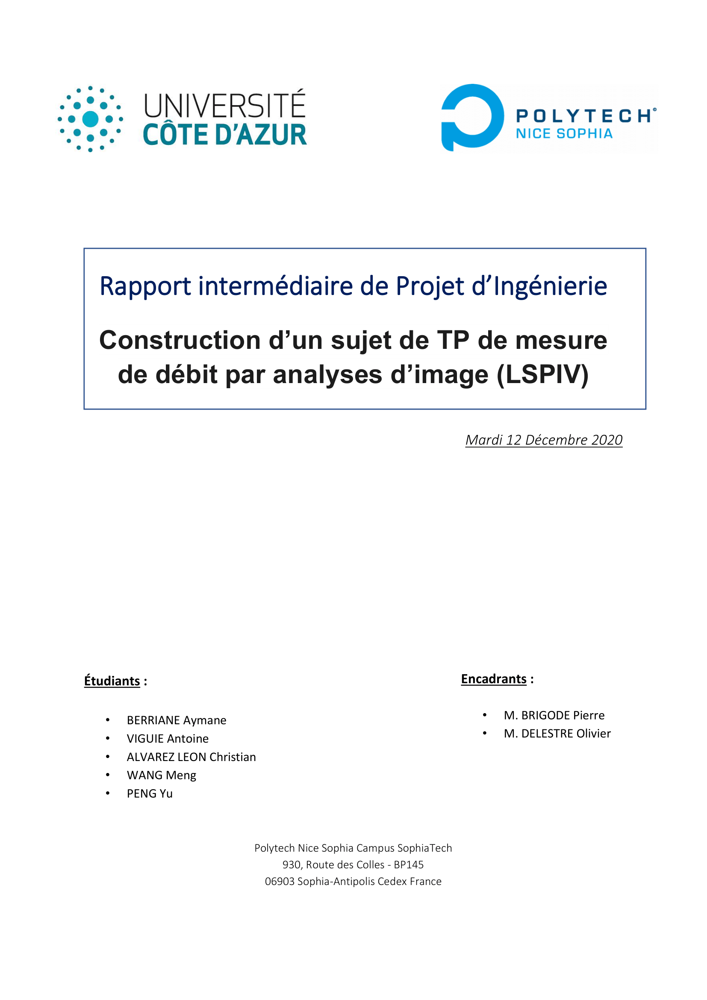

La raport intermédiaire
2020-12-08
Introduction

On observe régulièrement sur la Côte d’Azur, notamment à l’automne, de forts épisodes pluvieux, pouvant engendrer des crues. Par exemple, le 23 novembre 2019, des inondations exceptionnelles se sont produites sur la Côte d’Azur et ont inondé les plaines alluviales de l’Argens, de la Siagne et de la Brague notamment. Plus récemment, début octobre 2020, les vallées de la Roya, de la Vésubie ont été ravagées par des inondations, avec 500 mm relevés pendant l’épisode à Saint-Martin-Vésubie (“Météo-France” n.d.), du jamais vu à cette station depuis les relevés météorologiques. En raison de la nature destructrice des inondations, des recherches hydrologiques sur les bassins versants doivent être menées pour prendre les mesures d’anticipation et de protection de la population. Ceci nécessite par exemple de mesurer le débit sur des sections de cours d’eau non instrumentées en appareils de mesure. Dans notre projet, le but est de calculer le débit d’une section du canal de la Siagne par le logiciel Fudaa-LSPIV. Celui-ci permet de traiter des séquences d’images ou des vidéos d’écoulements pour calculer les champs de vitesse de surface et débit de la section choisie. Ce logiciel peut s’avérer utile pour mesurer le débit de sections de rivières avec un fort courant et de nombreux objets flottants, car les méthodes classiques seraient susceptibles d’abîmer le matériel. Il s’avèrera aussi nécessaire d’utiliser une autre méthode de mesure de débit, comme l’ADCP, pour comparer les résultats obtenus.